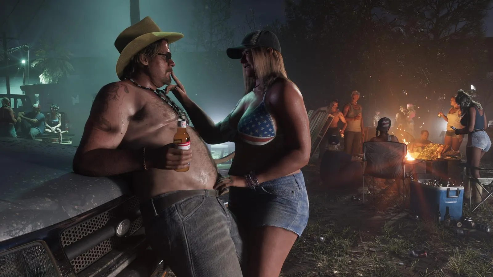
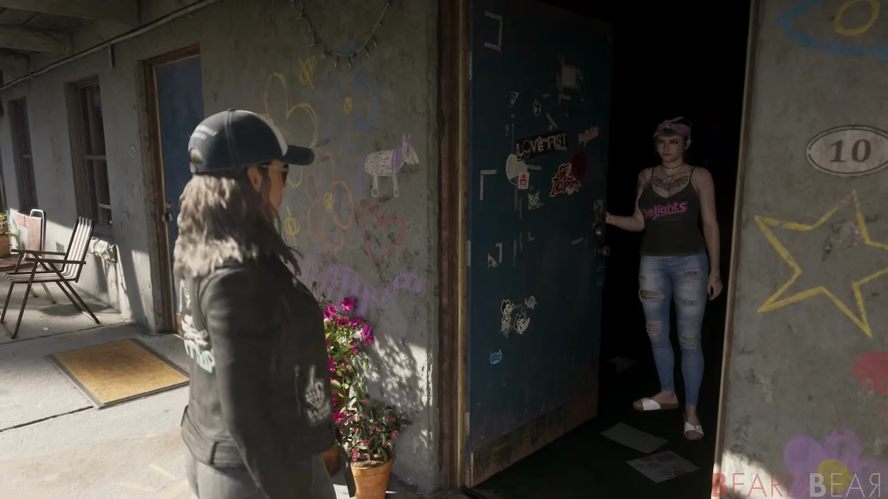
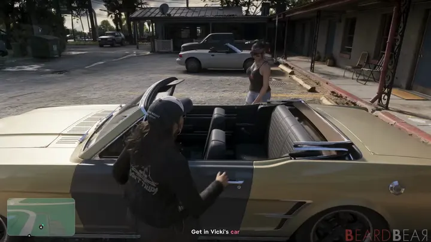
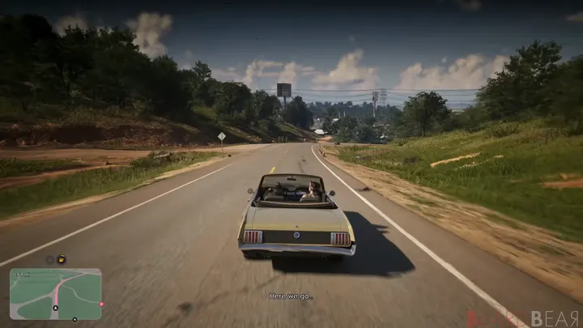
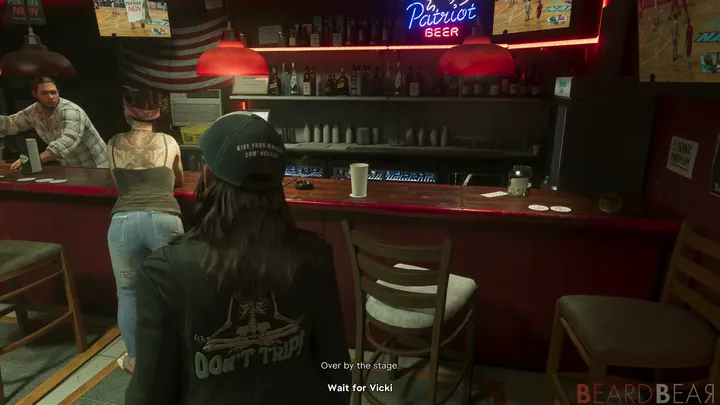
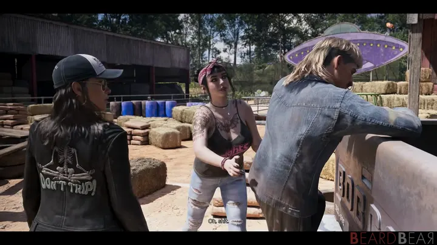
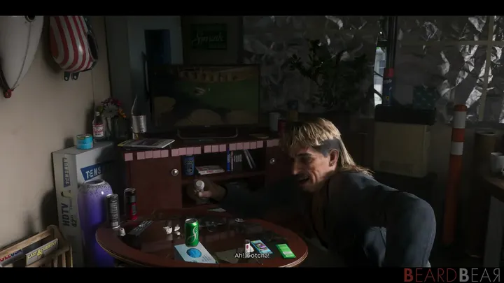
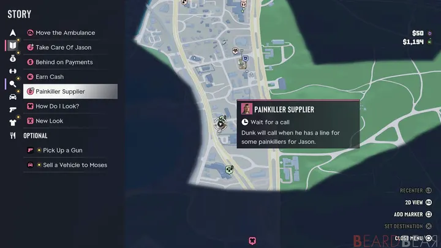

Girls’ Trip: прохождение миссии GTA 6
Опубликовано:

- Джейсону после ранения нужны сильные обезболивающие, и Лусия ищет их по мотелю Starlet. Соседка Вики продаёт ей пустышку, а потом сама везёт к своему дилеру Данку — с остановкой в стрип-клубе и встречей с бандой Kolts на автомойке.
- Глава 2, миссия 4 из 11. Играем за: Лусия.
- Награда: $50 на BuckMe — Вики вернёт деньги за таблетки.
Миссия коротко
| Глава | 2. Paradise Lost |
| Номер в сюжете | 4 |
| Играем за | Лусия |
| Кто даёт | Вики |
| Где начинается | Starlet Motel → клуб Delights → Port Gellhorn |
| Условие | Overnight Charges и Just Moved In |
| Награда | $50 на BuckMe — Вики вернёт деньги за таблетки |
| Переиграть | нельзя — сохраняйтесь вручную |

Где начинается
Прохождение по шагам
- Поговорите с Заком между вашим номером и регистратурой — он отправит к Вики в номер 10.
- Купите «таблетки» у Вики за $50.
- Покажите их Джейсону — это оказывается обычный Zombix из аптеки.
- Вернитесь к Вики. Лусия прижмёт её, и та согласится помочь достать настоящие.
- Езжайте в Delights на машине Вики — она там работает — и пройдите за ней к Фрэнки Делайту.
- Ищите Данка: его трейлер пуст, на лодочной верфи друзья скажут, что он торгует на автомойке.
- Автомойка. Данк сбегает, а вы остаётесь с бандой Kolts.
- Выбор: дважды выберите «Defuse» (успокоить) — Kolts уйдут без драки, а вы получите Professional-репутацию. Можно и спровоцировать драку.
- Догоните Данка. Поднимите рольставню и езжайте за ним — он разобьёт машину на ферме.
- Отвезите Данка домой. Таблеток у него нет, но он обещает достать у своего поставщика — «доктора Билла».












Советы
- Мирный вариант на автомойке — самый выгодный: без перестрелки и с плюсом к репутации.
- После миссии открываются задания Moses, New Look, How Do I Look? и необязательное Pick Up A Gun.
Подробности и секреты
- Открывается после Overnight Charges и Just Moved In; другое название — Find Painkillers. Обязательна для 100% (GTABase, egamers).
- Таблетки от Вики оказываются обычными аптечными — Джейсон замечает это сразу. Возвращайтесь в номер 10, выбейте дверь и пройдите QTE (Game8, MetaForge).
- По дороге Вики просит заехать в Delights Cabaret — её босс Фрэнки Делайт отдаёт ей зарплату (GTABase, TheDroidGuy). По данным MetaForge, машина Вики — ’65 Dominator.
- На автомойке выберите вариант «разрядить обстановку» (Defuse) — обойдётся без перестрелки (egamers).
- В конце Вики возвращает $50 через BuckMe и называет механика Мозеса — следующая миссия Moses (GTABase, games.gg).
Что можно пропустить
Выбор на автомойке влияет только на репутацию.
Частые вопросы
Что выбрать на автомойке в Girls’ Trip?
Дважды «Defuse»: банда Kolts уйдёт без драки, а Лусия получит Professional-репутацию.
Как начать Girls’ Trip?
Пройдите Overnight Charges и Just Moved In, затем расспросите людей в мотеле Starlet — Зак отправит к Вики в номер 10.
Как пройти автомойку в Girls’ Trip без боя?
Выберите вариант Defuse (разрядить обстановку).
Источники: PowerPyx, «GTA 6 Girl’s Trip (Find Painkillers) Walkthrough», 19.11.2026; PC Gamer, «GTA 6 mission list», 19.11.2026; Push Square (название Girls’ Trap), 19.11.2026; GTABase, Game8, Sportskeeda, nerdschalk, egamers, MetaForge, gtasixgaming, TheDroidGuy — Girls’ Trip, 20–28.11.2026. Кнопки указаны для PS5, в скобках — Xbox. Названия миссий — как в английской версии игры.